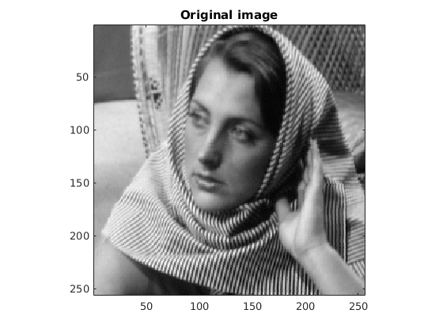
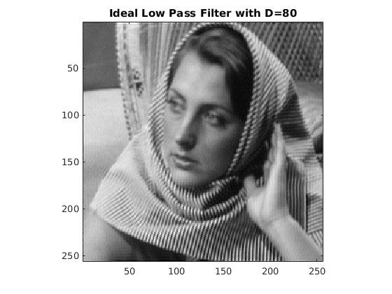
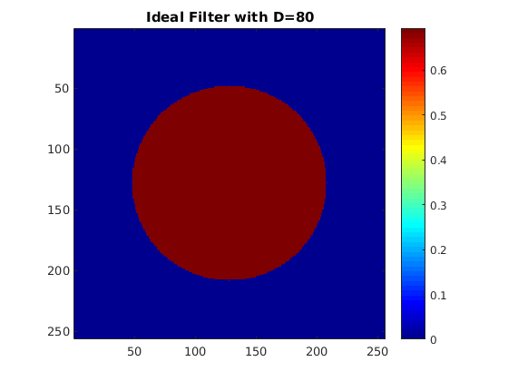
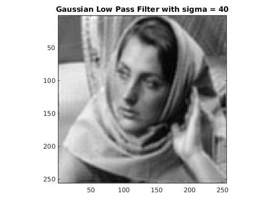
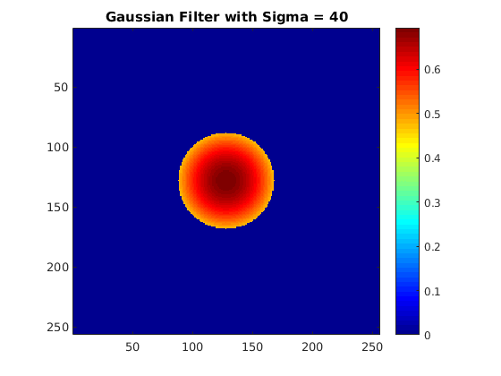
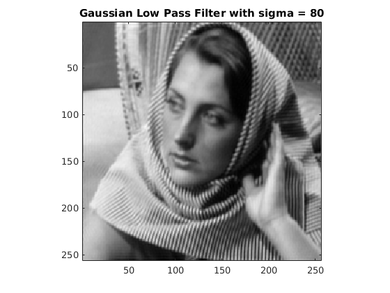
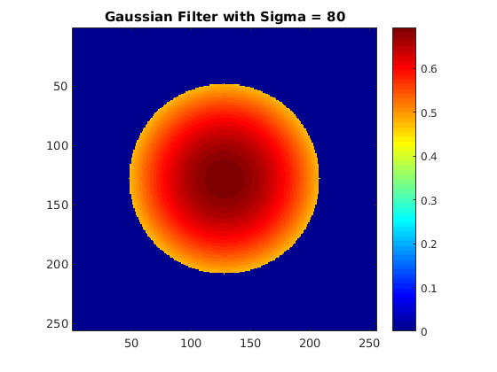

Contents
MyMainScript
tic; clc; clear;
Original Image
img = imread('../data/barbara256.png'); figure, imagesc(img), colormap(gray(256)), axis image, title('Original image');
Ideal low pass filter
D=40; [new_img, H] = ideal_low_pass_filter(img, D); figure, imagesc(uint8(abs(new_img))), title('Ideal Low Pass Filter with D=40'), axis image,colormap(gray(256)); figure, imagesc(H, [min(min(H)) max(max(H))]); colormap(jet); colorbar, axis image, title('Ideal Filter with D=40'); D=80; [new_img, H] = ideal_low_pass_filter(img, D); figure, imagesc(uint8(abs(new_img))), title('Ideal Low Pass Filter with D=80'), axis image, colormap(gray(256)); figure, imagesc(H, [min(min(H)) max(max(H))]); colormap(jet); colorbar, axis image, title('Ideal Filter with D=80');function [ new_img, H ] = ideal_low_pass_filter( img, D ) %UNTITLED function to implement ideal low-pass filter % Detailed explanation goes here [l w] = size(img); padded_img = img; imgfft = fft2(padded_img); imgfft_shift = fftshift(imgfft); imgabs = log(abs(imgfft_shift)+1); H = zeros(size(imgfft)); for u=1:l for v=1:w if((u-128)^2 + (v-128)^2 <= D^2) H(u,v) = 1; end end end new_img = ifft2(ifftshift(imgfft_shift.*H)); H = log(abs(H)+1); end % function [ new_img, H ] = ideal_low_pass_filter( img, D ) % %With padding function to implement ideal low-pass filter % % Result isn't good with the padding % [l w] = size(img); % padded_img = padarray(img, [l/2 w/2]); % imgfft = fft2(padded_img); % imgfft_shift = fftshift(imgfft); % imgabs = log(abs(imgfft_shift)+1); % % H = zeros(size(imgfft)); % for u=l/2+1:l/2+l % for v=w/2+1:w/2+w % if((u-256)^2 + (v-256)^2 <= D^2) % H(u,v) = 1; % end % end % end % % new_img = ifft2(ifftshift(imgfft_shift.*H)); % new_img = new_img(l/2+1:l/2+l,w/2+1:w/2+w); % % H = log(abs(H)+1); % end

 
Gaussian low pass filter
D=40; [new_img, H] = gaussian_low_pass_filter(img, D); figure, imagesc(uint8(abs(new_img))), title('Gaussian Low Pass Filter with sigma = 40'), axis image, colormap(gray(256)); figure, imagesc(H, [min(min(H)) max(max(H))]); colormap(jet); axis image, colorbar, title('Gaussian Filter with Sigma = 40'); D=80; [new_img, H] = gaussian_low_pass_filter(img, D); figure, imagesc(uint8(abs(new_img))), title('Gaussian Low Pass Filter with sigma = 80'), axis image, colormap(gray(256)); figure, imagesc(H, [min(min(H)) max(max(H))]); colormap(jet); axis image, colorbar, title('Gaussian Filter with Sigma = 80'); toc;function [ new_img, H ] = gaussian_low_pass_filter( img, D ) %UNTITLED2 function to implement gaussian low-pass filter % Detailed explanation goes here [l w] = size(img); padded_img = img; imgfft = fft2(padded_img); imgfft_shift = fftshift(imgfft); imgabs = log(abs(imgfft_shift)+1); H = zeros(size(imgfft)); for u=1:l for v=1:w if((u-128)^2 + (v-128)^2 <= D^2) H(u,v) = exp(-((u-128)^2 + (v-128)^2)/(2*D^2));; end end end new_img = ifft2(ifftshift(imgfft_shift.*H)); H = log(abs(H)+1); end % function [ new_img, H ] = gaussian_low_pass_filter( img, D ) % %With padding function to implement gaussian low-pass filter % % The results aren't good with this % [l w] = size(img); % padded_img = padarray(img, [l/2 w/2]); % imgfft = fft2(padded_img); % imgfft_shift = fftshift(imgfft); % imgabs = log(abs(imgfft_shift)+1); % % H = zeros(size(imgfft)); % for u=l/2+1:l/2+l % for v=w/2+1:w/2+w % if((u-256)^2 + (v-256)^2 <= D^2) % H(u,v) = exp(-((u-256)^2 + (v-256)^2)/(2*D^2)); % end % end % end % % new_img = ifft2(ifftshift(imgfft_shift.*H)); % new_img = new_img(l/2+1:l/2+l,w/2+1:w/2+w); % % H = log(abs(H)+1); % end
Elapsed time is 8.994729 seconds. 
 